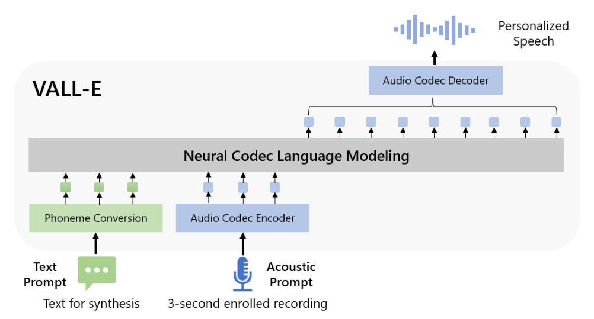
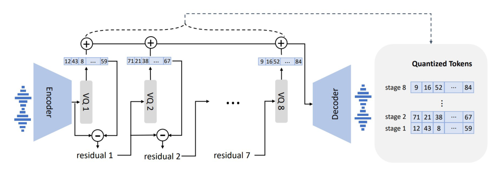
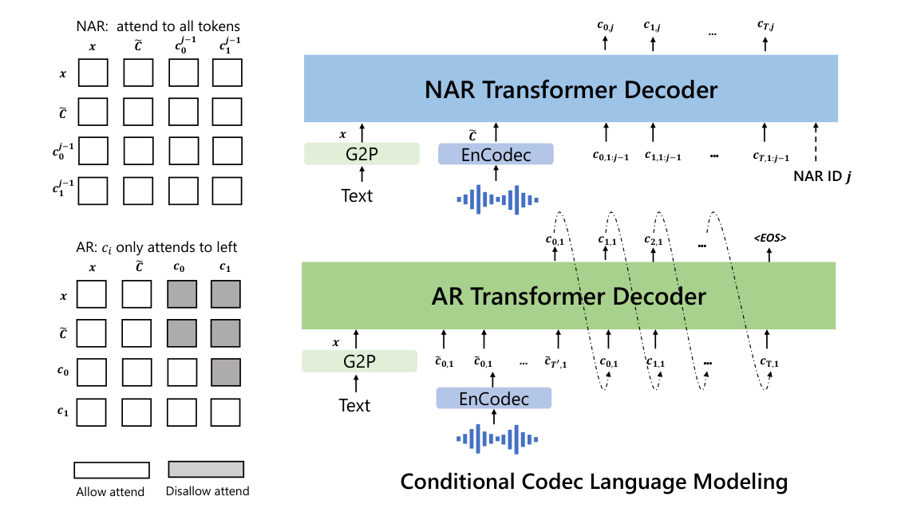
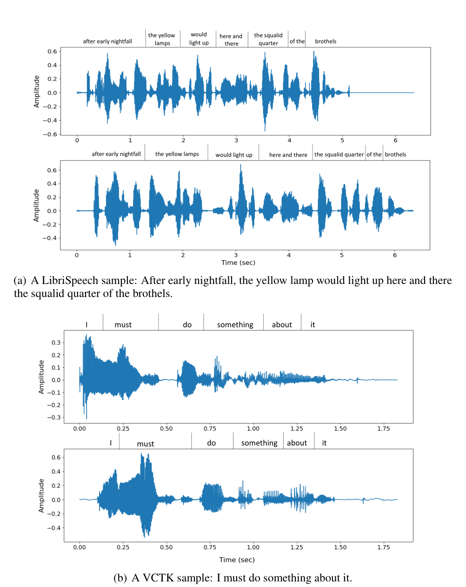

Chengyi Wang∗Sanyuan Chen∗Yu Wu∗Ziqiang Zhang Long Zhou Shujie Liu Zhuo Chen Yanqing Liu Huaming Wang Jinyu Li Lei He Sheng Zhao Furu Wei Microsoft https://github.com/microsoft/unilm
摘要Abstract
We introduce a language modeling approach for text to speech synthesis (TTS). Specifically, we train a neural codec language model (called VALL-E) using discrete codes derived from an off-the-shelf neural audio codec model, and regard TTS as a conditional language modeling task rather than continuous signal regression as in previous work. During the pre-training stage, we scale up the TTS training data to 60K hours of English speech which is hundreds of times larger than existing systems. VALL-E emerges in-context learning capabilities and can be used to synthesize high-quality personalized speech with only a 3-second enrolled recording of an unseen speaker as an acoustic prompt. Experiment results show that VALL-E significantly outperforms the state-of-the-art zero-shot TTS system in terms of speech naturalness and speaker similarity. In addition, we find VALL-E could preserve the speaker’s emotion and acoustic environment of the acoustic prompt in synthesis. See https://aka.ms/valle for demos of our work.
我们为文本到语音合成（TTS）提出一种语言建模方法。具体来说，我们用现成的神经音频 codec 模型得到的离散码来训练一个神经 codec 语言模型（称为 VALL-E），把 TTS 看作一个条件语言建模任务，而不是以往工作那样的连续信号回归。在预训练阶段，我们把 TTS 的训练数据规模扩展到 60K 小时的英语语音，比现有系统大数百倍。VALL-E 涌现出上下文学习（in-context learning）能力：只需一个未见说话人的 3 秒注册录音作为声学提示（acoustic prompt），即可合成高质量的个性化语音。实验结果表明，在语音自然度和说话人相似度上，VALL-E 显著优于最先进的零样本（zero-shot）TTS 系统。此外，我们发现 VALL-E 在合成中能够保留声学提示中的说话人情感和声学环境。我们的工作样例见 https://aka.ms/valle。

图Figure 1: The overview of VALL-E. Unlike the previous pipeline (e.g., phoneme →mel-spectrogram →waveform), the pipeline of VALL-E is phoneme →discrete code →waveform. VALL-E generates the discrete audio codec codes based on phoneme and acoustic code prompts, corresponding to the target content and the speaker’s voice. VALL-E directly enables various speech synthesis applications, such as zero-shot TTS, speech editing, and content creation combined with other generative AI models like GPT-3 [Brown et al., 2020].
图 1：VALL-E 概览。与以往的流水线（如 音素→Mel 频谱图→波形）不同，VALL-E 的流水线是 音素→离散码→波形。VALL-E 基于音素提示和声学码提示生成离散的音频 codec 码，分别对应目标内容和说话人声音。VALL-E 可直接支撑多种语音合成应用，例如零样本 TTS、语音编辑，以及与 GPT-3 [Brown et al., 2020] 等其他生成式 AI 模型结合进行内容创作。
∗These authors contributed equally to this work. Correspondence: {yuwu1,shujliu,fuwei}@microsoft.com
∗这些作者对本文贡献相同。通讯作者：{yuwu1,shujliu,fuwei}@microsoft.com
1 引言Introduction
The last decade has yielded dramatic breakthroughs in speech synthesis through the development of neural networks and end-to-end modeling. Currently, cascaded text to speech (TTS) systems [Shen et al., 2018, Ren et al., 2019, Li et al., 2019] usually leverage a pipeline with an acoustic model and a vocoder using mel spectrograms as the intermediate representations. While advanced TTS systems can synthesize high-quality speech from single or multiple speakers [Liu et al., 2022, Kim et al., 2021], it still requires high-quality clean data from the recording studio. Large-scale data crawled from the Internet cannot meet the requirement, and always lead to performance degradation. Because the training data is relatively small, current TTS systems still suffer from poor generalization. Speaker similarity and speech naturalness decline dramatically for unseen speakers in the zero-shot scenario. To tackle the zero-shot TTS problem, existing work leverages speaker adaptation [Chen et al., 2019, Wang et al., 2020] and speaker encoding [Arik et al., 2018, Casanova et al., 2022b] methods, requiring additional fine-tuning, complex pre-designed features, or heavy structure engineering.
过去十年，神经网络和端到端建模的发展为语音合成带来了巨大突破。目前的级联式文本到语音（TTS）系统 [Shen et al., 2018, Ren et al., 2019, Li et al., 2019] 通常采用声学模型加声码器的流水线，以 Mel 频谱图作为中间表示。虽然先进的 TTS 系统已能为单个或多个说话人合成高质量语音 [Liu et al., 2022, Kim et al., 2021]，但它仍需要录音棚级别的高音质干净数据。从互联网爬取的大规模数据无法满足这一要求，反而总是导致性能下降。由于训练数据相对较小，当前 TTS 系统的泛化能力仍然很差。在零样本场景下，面对未见说话人，说话人相似度和语音自然度都会大幅下降。为解决零样本 TTS 问题，现有工作采用说话人自适应 [Chen et al., 2019, Wang et al., 2020] 和说话人编码 [Arik et al., 2018, Casanova et al., 2022b] 方法，需要额外的微调、复杂的预设计特征或繁重的结构工程。
Instead of designing a complex and specific network for this problem, the ultimate solution is to train a model with large and diverse data as much as possible, motivated by success in the field of text synthesis [Brown et al., 2020, Chowdhery et al., 2022]. Recent years have witnessed notable performance improvement for data increase in the text language model, from 16GB of uncompressed text [Devlin et al., 2019], to 160GB [Liu et al., 2019], to 570GB [Brown et al., 2020], and finally, around 1TB [Chowdhery et al., 2022]. Transferring this success to the field of speech synthesis, we introduce VALL-E, the first language model based TTS framework leveraging the large, diverse, and multi-speaker speech data. As shown in Figure 1, to synthesize personalized speech (e.g., zero-shot TTS), VALL-E generates the corresponding acoustic tokens conditioned on the acoustic tokens of the 3-second enrolled recording and the phoneme prompt, which constrain the speaker and content information respectively. Finally, the generated acoustic tokens are used to synthesize the final waveform with the corresponding neural codec decoder [Défossez et al., 2022]. The discrete acoustic tokens derived from an audio codec model enable us to treat TTS as conditional codec language modeling, and advanced prompting-based large-model techniques (as in GPTs [Brown et al., 2020]) can be leveraged for the TTS tasks. The acoustic tokens also allow us to generate diverse synthesized results in TTS by using different sampling strategies during inference.
受文本合成领域成功经验的启发 [Brown et al., 2020, Chowdhery et al., 2022]，与其为这个问题设计复杂而专用的网络，终极解决方案是用尽可能大而多样的数据训练模型。近年来，文本语言模型随数据增长取得了显著的性能提升：从 16GB 未压缩文本 [Devlin et al., 2019]，到 160GB [Liu et al., 2019]，到 570GB [Brown et al., 2020]，最终达到约 1TB [Chowdhery et al., 2022]。为了把这一成功迁移到语音合成领域，我们提出 VALL-E——第一个基于语言模型的 TTS 框架，利用大规模、多样化、多说话人的语音数据。如图 1 所示，为合成个性化语音（如零样本 TTS），VALL-E 以 3 秒注册录音的声学 token 和音素提示为条件，生成对应的声学 token，二者分别约束说话人信息和内容信息。最后，生成的声学 token 被送入相应的神经 codec 解码器 [Défossez et al., 2022]，合成最终波形。音频 codec 模型产生的离散声学 token 让我们可以把 TTS 当作条件 codec 语言建模来做，从而可以将先进的、基于提示的大模型技术（如 GPT 系列 [Brown et al., 2020]）用于 TTS 任务。声学 token 还让我们能够在推理时通过不同的采样策略，在 TTS 中生成多样化的合成结果。
We train VALL-E with LibriLight [Kahn et al., 2020], a corpus consisting of 60K hours of English speech with over 7000 unique speakers. The original data is audio-only, so we employ a speech recognition model to generate the transcriptions. Compared to previous TTS training datasets, such as LibriTTS [Zen et al., 2019], our data contain more noisy speech and inaccurate transcriptions but provide diverse speakers and prosodies. We believe the proposed approach is robust to the noise and generalize well by leveraging large data. It is worth noting that existing TTS systems are always trained with dozens of hours of single-speaker data or hundreds of hours of multi-speaker data, which is over hundreds of times smaller than VALL-E. Table 1 summarizes the innovation of VALL- E, a language model approach for TTS, using audio codec codes as intermediate representations, leveraging large and diverse data, leading to strong in-context learning capabilities.
我们用 LibriLight [Kahn et al., 2020] 训练 VALL-E，该语料包含 60K 小时英语语音、超过 7000 个不同说话人。原始数据只有音频，因此我们使用一个语音识别模型来生成转录文本。与以往的 TTS 训练数据集（如 LibriTTS [Zen et al., 2019]）相比，我们的数据包含更多噪声语音和不准确的转录，但提供了多样的说话人和韵律。我们相信，所提方法借助大数据对噪声具有鲁棒性，并能很好地泛化。值得注意的是，现有 TTS 系统总是用几十小时的单说话人数据或几百小时的多说话人数据训练，比 VALL-E 小了几百倍。Table 1 总结了 VALL-E 的创新之处：一种用于 TTS 的语言模型方法，以音频 codec 码作为中间表示，利用大规模多样化数据，从而获得强大的上下文学习能力。
Table 1: A comparison between VALL-E and current cascaded TTS systems.
表 1：VALL-E 与当前级联式 TTS 系统的对比。
| Current Systems | VALL-E | |
|---|---|---|
| Intermediate representation | mel spectrogram | audio codec code |
| Objective function | continuous signal regression | language model |
| Training data | ≤600 hours | 60K hours |
| In-context learning |
当前系统Current Systems
VALL-E Intermediate representation mel spectrogram audio codec code Objective function continuous signal regression language model Training data ≤600 hours 60K hours In-context learning We evaluate VALL-E on LibriSpeech [Panayotov et al., 2015] and VCTK [Veaux et al., 2016] datasets, where all test speakers are unseen in the training corpus. VALL-E significantly outperforms the state-of-the-art zero-shot TTS system [Casanova et al., 2022b] in terms of speech naturalness and speaker similarity, with +0.12 comparative mean option score (CMOS) and +0.93 similarity mean option score (SMOS) improvement on LibriSpeech. VALL-E also beats the baseline on VCTK with +0.11 SMOS and +0.23 CMOS improvements. It even achieves a +0.04 CMOS score against ground truth, showing the synthesized speech of unseen speakers is as natural as human recordings on VCTK. Moreover, the qualitative analysis shows that VALL-E is able to synthesize diverse outputs with the same text and target speaker, which could benefit pseudo-data creation for the speech recognition task. We also find that VALL-E could keep the acoustic environment (e.g., reverberation) and emotion (e.g. anger) of the acoustic prompt.
（本段前半为 Table 1 的表格体抽取残留：中间表示——Mel 频谱图 vs 音频 codec 码；目标函数——连续信号回归 vs 语言模型；训练数据——≤600 小时 vs 60K 小时；上下文学习能力。）我们在 LibriSpeech [Panayotov et al., 2015] 和 VCTK [Veaux et al., 2016] 数据集上评估 VALL-E，其中所有测试说话人在训练语料中都未出现过。在语音自然度和说话人相似度上，VALL-E 显著优于最先进的零样本 TTS 系统 [Casanova et al., 2022b]，在 LibriSpeech 上取得了 +0.12 的对比平均意见分（CMOS）和 +0.93 的相似度平均意见分（SMOS）提升。VALL-E 在 VCTK 上也击败了基线，取得了 +0.11 SMOS 和 +0.23 CMOS 的提升。它甚至在与真实录音的对比中取得了 +0.04 的 CMOS 分数，表明在 VCTK 上，未见说话人的合成语音已和真人录音一样自然。此外，定性分析表明，VALL-E 能够用同一段文本和同一个目标说话人合成多样化的输出，这有利于为语音识别任务创造伪数据。我们还发现 VALL-E 可以保留声学提示中的声学环境（如混响）和情感（如愤怒）。
In summary, we make the following contributions.
总之，我们的贡献如下。
• We propose VALL-E, the first TTS framework with strong in-context learning capabilities as GPT-3, which treats TTS as a language model task with audio codec codes as an intermediate representation to replace the traditional mel spectrogram. It has in-context learning capability and enables prompt-based approaches for zero-shot TTS, which does not require additional structure engineering, pre-designed acoustic features, and fine-tuning as in previous work. • We build a generalized TTS system in the speaker dimension by leveraging a huge amount of semi-supervised data, suggesting that simple scaling up semi-supervised data has been underestimated for TTS. • VALL-E is able to provide diverse outputs with the same input text and keep the acoustic environment and speaker’s emotion of the acoustic prompt. • We verify that VALL-E synthesizes natural speech with high speaker similarity by prompting in the zero-shot scenario. Evaluation results show that VALL-E significantly outperforms the state-of-the-art zero-shot TTS system on LibriSpeech and VCTK.
• 我们提出 VALL-E——第一个像 GPT-3 那样具有强大上下文学习能力的 TTS 框架，它把 TTS 当作语言模型任务，以音频 codec 码作为中间表示，取代传统的 Mel 频谱图。它具有上下文学习能力，使基于提示（prompting）的零样本 TTS 成为可能，不需要以往工作那样的额外结构工程、预设计声学特征和微调。• 我们借助海量半监督数据，在说话人维度上构建了一个通用化的 TTS 系统，说明简单扩大半监督数据规模对 TTS 的价值一直被低估。• VALL-E 能对同一输入文本给出多样化输出，并保留声学提示中的声学环境与说话人情感。• 我们验证了 VALL-E 在零样本场景下通过提示即可合成自然语音，并具有高说话人相似度。评估结果表明，VALL-E 在 LibriSpeech 和 VCTK 上显著优于最先进的零样本 TTS 系统。
We encourage the reader to listen to our samples on the demo page https://aka.ms/valle.
我们鼓励读者到演示页面 https://aka.ms/valle 试听我们的样例。
2 相关工作Related Work
Zero-Shot TTS: Current TTS methods can be categorized into cascaded and end-to-end methods. Cascaded TTS systems [Shen et al., 2018, Ren et al., 2019, Li et al., 2019] usually leverage a pipeline with an acoustic model and a vocoder using mel spectrograms as the intermediate representations. To tackle the drawbacks of the vocoder, end-to-end TTS models [Kim et al., 2021, Liu et al., 2022] are proposed to jointly optimize the acoustic model and vocoder. In real scenarios, it is highly desirable to customize a TTS system to an arbitrary voice with rare enrolled recordings. Therefore, there is growing interest in the zero-shot multi-speaker TTS techniques, and most of work is done in the context of cascaded TTS systems. As the pioneers, Arik et al. [2018] proposes speaker adaptation and speaker encoding approaches. In the line of speaker adaptation, the following work [Chen et al., 2019, Wang et al., 2020, Chen et al., 2021] tries to improve the adaptation efficiency with less target speaker data and speaker-specific parameters. Huang et al. [2022] applies meta-learning on speaker adaptation, which only requires 5-shot to build a well-performed system. In parallel, speaker encoding-based methods achieved great progress in recent years. A speaker encoding based system contains a speaker encoder and a TTS component, where the speaker encoder could be pre-trained on the speaker verification task [Jia et al., 2018]. In Jia et al. [2018] and Arik et al. [2018], the experiments show that the model is able to generate high-quality outputs with 3 seconds enrolled recordings for in-domain speakers. To improve the quality of unseen speakers, advanced speaker embedding models [Cai et al., 2018] can be employed, but it is still undesirable according to Tan et al. [2021]. Another way is to design advanced but complex speaker encoder [Wu et al., 2022]. Diffusion model based TTS [Popov et al., 2021, Kim et al., 2022] is also extended to zero-shot TTS [Kang et al., 2022] and achieved good results. Compared to previous work [Ren et al., 2019, Du et al., 2022], our work follows the line of cascaded TTS but first uses audio codec code as intermediate representations. It is the first one that has strong in-context learning capabilities as GPT-3, which does not require fine-tuning, pre-designed features, or a complex speaker encoder.
零样本 TTS：当前 TTS 方法可分为级联式和端到端两类。级联式 TTS 系统 [Shen et al., 2018, Ren et al., 2019, Li et al., 2019] 通常采用声学模型加声码器的流水线，以 Mel 频谱图作为中间表示。为克服声码器的缺点，端到端 TTS 模型 [Kim et al., 2021, Liu et al., 2022] 被提出，联合优化声学模型和声码器。在实际场景中，人们非常希望只用极少的注册录音，就能把 TTS 系统定制到任意声音上。因此，零样本多说话人 TTS 技术越来越受到关注，而大部分工作是在级联式 TTS 系统的框架下完成的。作为先驱，Arik et al. [2018] 提出了说话人自适应和说话人编码两种方法。在说话人自适应这条路线中，后续工作 [Chen et al., 2019, Wang et al., 2020, Chen et al., 2021] 试图用更少的目标说话人数据和说话人相关参数来提高自适应效率。Huang et al. [2022] 将元学习应用于说话人自适应，只需 5 个样本即可构建表现良好的系统。与此同时，基于说话人编码的方法近年来也取得了很大进展。基于说话人编码的系统包含一个说话人编码器和一个 TTS 组件，其中说话人编码器可以在说话人验证任务上预训练 [Jia et al., 2018]。在 Jia et al. [2018] 和 Arik et al. [2018] 中，实验表明对域内说话人，模型用 3 秒注册录音就能生成高质量输出。为了提高未见说话人的质量，可以采用先进的说话人嵌入模型 [Cai et al., 2018]，但按 Tan et al. [2021] 的说法效果仍不理想。另一条路是设计先进但复杂的说话人编码器 [Wu et al., 2022]。基于扩散模型的 TTS [Popov et al., 2021, Kim et al., 2022] 也被扩展到零样本 TTS [Kang et al., 2022]，并取得了不错的结果。与以往工作 [Ren et al., 2019, Du et al., 2022] 相比，我们的工作沿袭级联式 TTS 的路线，但首次使用音频 codec 码作为中间表示。它是第一个像 GPT-3 那样具有强大上下文学习能力的系统，不需要微调、预设计特征或复杂的说话人编码器。
Spoken generative pre-trained models: Self-supervised learning is widely investigated in the field of speech understanding [Baevski et al., 2020b, Hsu et al., 2021, Chen et al., 2022] and speech-tospeech generation [Lakhotia et al., 2021, Borsos et al., 2022]. In the context of speech-to-speech generation, a hot topic is how to synthesize speech in a textless setting. GSLM [Lakhotia et al., 2021] proposes to synthesize speech based on HuBERT codes [Hsu et al., 2021], and Polyak et al. [2021] improves the performance by combining HuBERT codes with codes of VQVAE and a speaker encoder. AudioLM [Borsos et al., 2022] follows a similar way but use audio codecs [Zeghidour et al., 2022] to synthesize speech, together with semantic codes. It should be noted that AudioLM is able to synthesize speech based on audio codecs without training an additional vocoder such as HifiGAN [Kong et al., 2020]. AudioLM is a speech-to-speech model, whereas VALL-E is a TTS model, so
口语生成式预训练模型：自监督学习在语音理解 [Baevski et al., 2020b, Hsu et al., 2021, Chen et al., 2022] 和语音到语音生成 [Lakhotia et al., 2021, Borsos et al., 2022] 领域被广泛研究。在语音到语音生成的语境下，一个热门话题是如何在无文本（textless）设定下合成语音。GSLM [Lakhotia et al., 2021] 提出基于 HuBERT 码 [Hsu et al., 2021] 合成语音，Polyak et al. [2021] 通过将 HuBERT 码与 VQVAE 的码及说话人编码器结合来改进性能。AudioLM [Borsos et al., 2022] 采用类似方式，但使用音频 codec [Zeghidour et al., 2022] 结合语义码来合成语音。值得注意的是，AudioLM 能基于音频 codec 合成语音，而无需训练 HifiGAN [Kong et al., 2020] 这类额外的声码器。AudioLM 是语音到语音模型，而 VALL-E 是 TTS 模型，所以

图Figure 2: The neural audio codec model revisit. Because RVQ is employed, the first quantizer plays the most important role in reconstruction, and the impact from others gradually decreases.
图 2：神经音频 codec 模型回顾。由于采用了残差向量量化（RVQ），第一个量化器在重建中起最重要的作用，其余量化器的影响逐渐减弱。
we can explicitly control the content in speech synthesis. Another direction is to apply pre-training to the neural TTS. Chung et al. [2018] pre-trains speech decoder in TTS through autoregressive mel-spectrogram prediction. In Ao et al. [2022], the authors propose a unified-modal encoder-decoder framework SpeechT5, which can leverage unlabeled speech and text data to pre-train all components of TTS model. Tjandra et al. [2019] quantizes unlabeled speech into discrete tokens by a VQVAE model [van den Oord et al., 2017], and train a model with the token-to-speech sequence. They demonstrate that the pre-trained model only requires a small amount of real data for fine-tuning. Bai et al. [2022] proposes mask and reconstruction on mel spectrogram and showing better performance on speech editing and synthesis. Previous TTS pre-training work leverages less than 1K hours of data, whereas VALL-E is pre-trained with 60K hours of data. Furthermore, VALL-E is the first to use audio codec codes as intermediate representations, and emerge in-context learning capability in zero-shot TTS.
我们可以在语音合成中显式控制内容。另一个方向是把预训练应用于神经 TTS。Chung et al. [2018] 通过自回归 Mel 频谱图预测来预训练 TTS 中的语音解码器。在 Ao et al. [2022] 中，作者提出了统一模态的编码器-解码器框架 SpeechT5，能利用无标注的语音和文本数据预训练 TTS 模型的所有组件。Tjandra et al. [2019] 用 VQVAE 模型 [van den Oord et al., 2017] 把无标注语音量化为离散 token，并用 token 到语音的序列训练模型。他们证明，预训练模型只需少量真实数据进行微调即可。Bai et al. [2022] 提出在 Mel 频谱图上做掩码与重建，在语音编辑和合成上展现出更好的性能。以往的 TTS 预训练工作使用的数据不足 1K 小时，而 VALL-E 的预训练使用了 60K 小时数据。此外，VALL-E 首次使用音频 codec 码作为中间表示，并在零样本 TTS 中涌现出上下文学习能力。
3 背景：语音量化Background: Speech Quantization
Since audio is typically stored as a sequence of 16-bit integer values, a generative model is required to output 216 = 65, 536 probabilities per timestep to synthesize the raw audio. In addition, the audio sample rate exceeding ten thousand leads to an extraordinarily long sequence length, making it more intractable for raw audio synthesis. To this end, speech quantization is required to compress integer values and sequence length. µ-law transformation can quantize each timestep to 256 values and reconstruct high-quality raw audio. It is widely used in speech generative models, such as WaveNet [van den Oord et al., 2016], but the inference speed is still slow since the sequence length is not reduced. Recently, vector quantization is widely applied in self-supervised speech models for feature extraction, such as vq-wav2vec [Baevski et al., 2020a] and HuBERT [Hsu et al., 2021]. The following work [Lakhotia et al., 2021, Du et al., 2022] shows the codes from self-supervised models can also reconstruct content, and the inference speed is faster than WaveNet. However, the speaker identity has been discarded and the reconstruction quality is low [Borsos et al., 2022]. AudioLM [Borsos et al., 2022] trains speech-to-speech language models on both k-means tokens from a self-supervised model and acoustic tokens from a neural codec model, leading to high-quality speech-to-speech generation.
由于音频通常以 16 位整数值序列存储，要直接合成原始音频，生成模型在每个时间步需要输出 2^16 = 65,536 个概率（原文抽取为 216 = 65, 536）。此外，上万的音频采样率导致序列极长，使原始音频合成更加难以处理。为此，需要语音量化来压缩整数值和序列长度。µ-law 变换可以把每个时间步量化到 256 个取值，并重建出高质量的原始音频。它被广泛用于语音生成模型（如 WaveNet [van den Oord et al., 2016]），但由于序列长度没有减少，推理速度仍然很慢。近年来，向量量化被广泛应用于自监督语音模型的特征提取，如 vq-wav2vec [Baevski et al., 2020a] 和 HuBERT [Hsu et al., 2021]。后续工作 [Lakhotia et al., 2021, Du et al., 2022] 表明，自监督模型的码也可以重建内容，且推理速度比 WaveNet 更快。然而，说话人身份被丢弃了，重建质量也较低 [Borsos et al., 2022]。AudioLM [Borsos et al., 2022] 同时在自监督模型的 k-means token 和神经 codec 模型的声学 token 上训练语音到语音语言模型，实现了高质量的语音到语音生成。
In this paper, we follow AudioLM [Borsos et al., 2022] to leverage neural codec models to represent speech in discrete tokens. To compress audio for network transmission, codec models are able to encode waveform into discrete acoustic codes and reconstruct high-quality waveform even if the speaker is unseen in training. Compared to traditional audio codec approaches, the neural-based codec is significantly better at low bitrates, and we believe the quantized tokens contain sufficient information about the speaker and recording conditions. Compared to other quantization methods, the audio codec shows the following advantages: 1) It contains abundant speaker information and acoustic information, which could maintain speaker identity in reconstruction compared to HuBERT codes [Hsu et al., 2021]. 2) There is an off-the-shelf codec decoder to convert discrete tokens into a waveform, without the additional efforts on vocoder training like VQ-based methods that operated on spectrum [Du et al., 2022]. 3) It could reduce the length of time steps for efficiency to address the problem in µ-law transformation [van den Oord et al., 2016].
在本文中，我们沿用 AudioLM [Borsos et al., 2022]，利用神经 codec 模型以离散 token 表示语音。为了压缩音频以便网络传输，codec 模型能把波形编码为离散声学码，并重建出高质量波形——即使该说话人未在训练中出现。与传统音频 codec 方法相比，基于神经网络的 codec 在低码率下明显更好；我们相信量化后的 token 包含了关于说话人和录音条件的充分信息。与其他量化方法相比，音频 codec 有以下优点：1) 它包含丰富的说话人信息和声学信息，相比 HuBERT 码 [Hsu et al., 2021] 能在重建中保持说话人身份；2) 有现成的 codec 解码器可将离散 token 转回波形，无需像作用于频谱的 VQ 类方法 [Du et al., 2022] 那样额外训练声码器；3) 它能缩短时间步长度、提高效率，解决 µ-law 变换 [van den Oord et al., 2016] 存在的问题。
We adopt a pre-trained neural audio codec model, EnCodec [Défossez et al., 2022], as our tokenizer. EnCodec is a convolutional encoder-decoder model, whose input and output are both 24 kHz audio across variable bitrates. The encoder produces embeddings at 75 Hz for input waveforms at 24 kHz, which is a 320-fold reduction in the sampling rate. Each embedding is modeled by a residual vector quantization (RVQ), in which we choose eight hierarchy quantizers with 1024 entries each as shown in Figure 2. This configuration corresponds to EnCodec at 6K bitrates for 24 kHz audio reconstruction. In this setting, given a 10-second waveform, the discrete representation is a matrix with 750 × 8 entries, where 750 = 24,000×10
我们采用预训练的神经音频 codec 模型 EnCodec [Défossez et al., 2022] 作为我们的分词器。EnCodec 是一个卷积编码器-解码器模型，其输入和输出均为不同码率下的 24 kHz 音频。对 24 kHz 的输入波形，编码器以 75 Hz 的帧率产出嵌入，相当于把采样率压缩了 320 倍。每个嵌入由残差向量量化（RVQ）建模；如图 2 所示，我们选用 8 个层级量化器，每个量化器有 1024 个条目。该配置对应 6K 码率的 EnCodec，用于 24 kHz 音频重建。在该设定下，给定一段 10 秒波形，其离散表示是一个 750 × 8 的矩阵，其中 750 = 24,000×10/320 是下采样后的时间步数，8 是量化器个数。
320is the downsampled time step and 8 is the number of quantizers. It is fine to choose other bitrate settings. A larger bitrate corresponds to more quantizers and better reconstruction quality. For example, if we choose EnCodecc at 12K bitrates, there are 16 quantizers are needed and the 10-second waveform corresponds to a matrix with 750 × 16 entries. With the discrete codes from all quantizers, the convolutional decoder of EnCodec generates real-valued embeddings and reconstructs the waveform at 24 kHz.
在该设定下，给定一段 10 秒波形，其离散表示是一个 750 × 8 的矩阵，其中 750 = 24,000×10/320 是下采样后的时间步数，8 是量化器个数。选择其他码率设定也是可以的。码率越大，对应的量化器越多，重建质量越好。例如，如果选择 12K 码率的 EnCodec（原文此处误作 EnCodecc），则需要 16 个量化器，10 秒波形对应一个 750 × 16 的矩阵。利用来自全部量化器的离散码，EnCodec 的卷积解码器生成实值嵌入，并重建出 24 kHz 的波形。
4 VALL-EVALL-E
4.1 问题形式化：把 TTS 视为条件 Codec 语言建模Problem Formulation: Regarding TTS as Conditional Codec Language Modeling
Given a dataset D = {xi, yi}, where y is an audio sample and x = {x0, x1, . . . , xL} is its corresponding phoneme transcription, we use a pre-trained neural codec model to encode each audio sample into discrete acoustic codes, denoted as Encodec(y) = CT ×8, where C represents the two-dimensional acoustic code matrix, and T is the downsampled utterance length. The row vector of each acoustic code matrix ct,: represents the eight codes for frame t and the column vector of each acoustic code matrix c:,j represents the code sequence from the j-th codebook, where j ∈{1, . . . , 8}. After quantization, the neural codec decoder is able to reconstruct the waveform, denoted as Decodec(C) ≈ˆy.
给定数据集 D = {xi, yi}，其中 y 是音频样本，x = {x0, x1, . . . , xL} 是其对应的音素转录。我们用预训练的神经 codec 模型把每个音频样本编码为离散声学码，记为 Encodec(y) = C^{T×8}，其中 C 表示二维声学码矩阵，T 是下采样后的语句长度。声学码矩阵的行向量 c_{t,:} 表示第 t 帧的 8 个码，列向量 c_{:,j} 表示来自第 j 个码本的码序列，其中 j ∈ {1, . . . , 8}。量化之后，神经 codec 解码器能够重建波形，记为 Decodec(C) ≈ ŷ。
Zero-shot TTS requires the model to synthesize high-quality speech for unseen speakers. In this work, we regard zero-shot TTS as a conditional codec language modeling task. We train a neural language model to generate an acoustic code matrix C conditioned on a phoneme sequence x and an acoustic prompt matrix ˜CT ′×8 with the optimization objective of max p(C|x, ˜C). Here, ˜C is obtained by the same neural codec with an enrolled recording as the input. We expect the neural language model learns to extract the content and speaker information from the phoneme sequence and the acoustic prompt, respectively. During inference, given a phoneme sequence and a 3-second enrolled recording of the unseen speaker, the acoustic code matrix with corresponding content and speaker’s voice is firstly estimated by the trained language model. Then the neural codec decoder synthesizes the high-quality speech.
零样本 TTS 要求模型为未见说话人合成高质量语音。在这项工作中，我们把零样本 TTS 视为条件 codec 语言建模任务。我们训练一个神经语言模型，以音素序列 x 和声学提示矩阵 C̃^{T'×8} 为条件生成声学码矩阵 C，优化目标是最大化 p(C|x, C̃)。这里，C̃ 由同一个神经 codec 以注册录音为输入得到。我们期望神经语言模型学会分别从音素序列和声学提示中提取内容信息和说话人信息。推理时，给定一个音素序列和未见说话人的一段 3 秒注册录音，首先由训练好的语言模型估计出具有对应内容和说话人声音的声学码矩阵。然后由神经 codec 解码器合成高质量语音。
4.2 训练：条件 Codec 语言建模Training: Conditional Codec Language Modeling
The neural speech codec model allows us to operate on discrete audio representations. Due to residual quantization in the neural codec model, the tokens have a hierarchical structure: tokens from previous quantizers recover acoustic properties like speaker identity, while the consecutive quantizers learn fine acoustic details. Each quantizer is trained to model the residual from the previous quantizers. Motivated by this, we design two conditional language models in a hierarchical manner.
神经语音 codec 模型让我们可以在离散音频表示上操作。由于神经 codec 模型中的残差量化，token 具有层级结构：来自前面量化器的 token 恢复的是说话人身份等声学属性，而后续量化器学习更精细的声学细节。每个量化器都被训练用来对前面量化器的残差建模。受此启发，我们以层级方式设计了两个条件语言模型。
For the discrete tokens from the first quantizer c:,1, we train an autoregressive (AR) decoder-only language model. It is conditioned on the phoneme sequence x and the acoustic prompt ˜C:,1, formulated as
对于来自第一个量化器的离散 token c_{:,1}，我们训练一个自回归（AR）decoder-only 语言模型。它以音素序列 x 和声学提示 C̃_{:,1} 为条件，形式化为
T Yp(c:,1|x, ˜C:,1; θAR) =t=0 p(ct,1|c<t,1,˜c:,1, x; θAR) (1)Since VALL-E is a decoder-only LM, the concatenation of ˜c:,1 and c:,1 is a whole sequence, and we do not distinguish them or insert a specific token in training. Only c:,1 is predicted while the prefix ˜c:,1 is given during inference.
（上式即 p(c_{:,1}|x, C̃_{:,1}; θ_AR) = ∏_{t=0}^{T} p(c_{t,1}|c_{<t,1}, c̃_{:,1}, x; θ_AR)。）由于 VALL-E 是 decoder-only 语言模型，c̃_{:,1} 和 c_{:,1} 的拼接是一条完整序列，训练中我们不区分它们，也不插入特定 token。推理时，只预测 c_{:,1}，而前缀 c̃_{:,1} 是给定的。
For the discrete tokens from the second to the last quantizers, c:,j∈[2,8], we train a non-autoregressive (NAR) language model. Since the tokens can not access each other in a NAR manner, to constrain the speaker identity, the acoustic prompt matrix ˜C is used as an acoustic prompt. Thus, the model is NAR: attend to all tokens
对于来自第二个到最后一个量化器的离散 token c_{:,j}（j∈[2,8]），我们训练一个非自回归（NAR）语言模型。由于 token 之间在 NAR 方式下无法相互访问，为约束说话人身份，声学提示矩阵 C̃ 被用作声学提示。因此，该模型是 NAR 的：（此处抽取混入 Figure 3 的图内标注残片「attend to all tokens 𝒄₀,ⱼ 𝒄₁,ⱼ … 𝒄_T,ⱼ」，意指 NAR 注意力覆盖整行 token。）
𝒋−𝟏 𝒄𝟏𝒋−𝟏෩𝑪 𝒙𝒄𝟎𝒙෩𝑪𝒙𝒄𝟎,𝒋 𝒄𝟏,𝒋 𝒄𝑻,𝒋 …NAR Transformer 解码器（Figure 3 图内标注残块）NAR Transformer Decoder
෩𝑪EnCodec G2P
（此处为 Figure 3 图内标注的抽取残块：EnCodec、G2P、Text；AR：𝑐_i 只注意左侧。）
𝒋−𝟏𝒄𝟎𝒋−𝟏Text
（此处为 Figure 3 图内标注的抽取残块：EnCodec、G2P、Text；AR：𝑐_i 只注意左侧。）
𝒄𝟏AR: 𝑐𝑖only attends to left
（此处为 Figure 3 图内标注的抽取残块：EnCodec、G2P、Text；AR：𝑐_i 只注意左侧。）
𝒙 ෩𝑪𝒄𝟎 𝒄𝟏𝒙෩𝑪𝒙G2P
（此处为 Figure 3 图内标注的抽取残块：EnCodec、G2P、Text；AR：𝑐_i 只注意左侧。）
𝒄𝟎,𝟏𝒄𝟎𝒄𝟎,𝟏:𝒋−𝟏 𝒄𝟏,𝟏:𝒋−𝟏 𝒄𝑻,𝟏:𝒋−𝟏NAR ID 𝒋 <EOS>
（Figure 3 图内标注：NAR、第 j 个码本 ID、<EOS>。）
𝒄𝟏,𝟏 𝒄𝟐,𝟏𝒄𝟎,𝟏AR Transformer 解码器（Figure 3 图内标注残块）AR Transformer Decoder
𝒄𝟎,𝟏 𝒄𝑻′,𝟏 …𝒄𝟏,𝟏 𝒄𝐓,𝟏𝒄𝟎,𝟏Text EnCodec
（Figure 3 图内标注：生成目标 𝒄_T,₁、Text、EnCodec。）
𝒄𝟏条件 Codec 语言建模（图注与公式残块）Conditional Codec Language Modeling
Allow attend Disallow attend
（Figure 3 图内图例：Allow attend 允许注意 / Disallow attend 禁止注意。）

图Figure 3: The structure of the conditional codec language modeling, which is built in a hierarchical manner. In practice, the NAR decoder will be called seven times to generate codes in seven quantizers.
图 3：条件 codec 语言建模的结构，以层级方式构建。实际中，NAR 解码器会被调用 7 次，生成 7 个量化器上的码。
conditioned on the phoneme sequence x, the acoustic prompt ˜C and the predicted acoustic tokens belong to the previous codebooks C:,<j:
以音素序列 x、声学提示 C̃ 和属于之前码本的已预测声学 token C_{:,<j} 为条件：
8 Yp(C:,2:8|x, ˜C; θNAR) =j=2 p(c:,j|C:,<j, x, ˜C; θNAR) (2)The combination of the AR model and the NAR model provides a good trade-off between speech quality and inference speed. On the one hand, the rate of the generated speech should be consistent with the enrolled recording, and it is hard to train a length predictor for different speakers since their speaking speed may be very diverse. In this case, the AR model is a more natural choice with its flexibility for acoustic sequence length prediction. On the other hand, for the consecutive stages, as the number of output slots follows the sequence length of the first stage, NAR can reduce the time complexity from O(T) to O(1). Overall, the prediction of C can be modeled as:
（上式即 p(C_{:,2:8}|x, C̃; θ_NAR) = ∏_{j=2}^{8} p(c_{:,j}|C_{:,<j}, x, C̃; θ_NAR)。）AR 模型与 NAR 模型的组合在语音质量和推理速度之间取得了很好的折中。一方面，生成语音的语速应与注册录音一致，而由于不同说话人的语速可能差异很大，很难为他们训练一个长度预测器。在这种情况下，AR 模型凭借其对声学序列长度预测的灵活性，是更自然的选择。另一方面，对于后续阶段，由于输出槽位数与第一阶段产出的序列长度一致，NAR 可以把时间复杂度从 O(T) 降到 O(1)。总体而言，C 的预测可以建模为：
p(C|x, ˜C; θ) = p(c:,1|˜C:,1, X; θAR)4.2.1 自回归 Codec 语言建模Autoregressive Codec Language Modeling
8 Yj=2 p(c:,j|c:,<j, x, ˜C; θNAR) (3)The autoregressive language model generates the tokens from the first quantizer. It comprises a phoneme embedding Wx, an acoustic embedding Wa, a transformer decoder, and a prediction layer. In order to generate speech with specific content, we use the phoneme sequence as the phoneme prompt of the language model. Thus, the model input is the concatenation of x and c:,1, and two special <EOS> tokens are appended after each of them. We compute sinuous position embedding separately for prompt and input tokens. For the causal transformer model, each token ct,1 can attend to (x, c≤t,1) as illustrated in the left part of Figure 3. The model is optimized to maximize the probability of the next token in the first codebook. We share the parameters of the output projection layer with the parameters of the acoustic embedding Wa.
（接前式 ∏_{j=2}^{8} p(c_{:,j}|c_{:,<j}, x, C̃; θ_NAR)。）自回归语言模型生成来自第一个量化器的 token。它由音素嵌入 W_x、声学嵌入 W_a、一个 Transformer 解码器和一个预测层组成。为了生成具有特定内容的语音，我们把音素序列作为语言模型的音素提示。因此，模型输入是 x 与 c_{:,1} 的拼接，并在两者之后各附加一个特殊的 <EOS> token。我们分别为提示 token 和输入 token 单独计算正弦位置嵌入。对于因果 Transformer 模型，每个 token c_{t,1} 可以注意 (x, c_{≤t,1})，如 Figure 3 左半部分所示。模型的优化目标是最大化第一个码本中下一个 token 的概率。我们把输出投影层的参数与声学嵌入 W_a 的参数共享。
In the AR model, we do not explicitly extract an audio clip as the prompt in training. The training process is pure casual language model training. In this way, any prefix sequence c<t,1 is treated as a prompt for the latter part of the sequence c≥t,1. During inference, given an enrolled recording, we should concatenate the phoneme sequence of the enrolled recording and the phoneme sequence for synthesis together. Meanwhile, the acoustic token sequence of the enrolled recording is used as the prefix in AR decoding, as formulated in equation 1. We will study the superiority of this setting in the experiment.
在 AR 模型中，我们在训练时不显式截取一个音频片段作为提示。训练过程就是纯粹的因果语言模型训练。这样，任何前缀序列 c_{<t,1} 都被当作序列后半部分 c_{≥t,1} 的提示。推理时，给定一段注册录音，我们应把注册录音的音素序列和待合成文本的音素序列拼接在一起。同时，注册录音的声学 token 序列被用作 AR 解码的前缀，如公式 1 所示。我们将在实验中研究这一设定的优越性。
4.2.2 非自回归 Codec 语言建模Non-Autoregressive Codec Language Modeling
When we obtain the first quantizer codes by the AR model, we employ a non-autoregressive (NAR) model to generate codes of the other seven quantizers. The NAR model has a similar architecture to the AR model, except that it contains eight separate acoustic embedding layers. In each training step, we randomly sample a training stage i ∈[2, 8]. The model is trained to maximize the acoustic tokens from the i-th quantizer codebook. The acoustic tokens from stage 1 to stage i −1 are embedded and summed up as model input:
当我们通过 AR 模型得到第一个量化器的码后，我们使用一个非自回归（NAR,之后统一用 NAR）模型来生成其余 7 个量化器的码。NAR 模型的架构与 AR 模型相似，区别在于它包含 8 个独立的声学嵌入层。在每个训练步中，我们随机采样一个训练阶段 i ∈ [2, 8]。模型被训练来最大化第 i 个量化器码本上的声学 token。来自第 1 到第 i−1 阶段的声学 token 被嵌入并求和，作为模型输入：ec_{t,j} = W_a^j ⊙ c_{t,j}，ec_t =
ect,j = W j a ⊙ct,j (4)ect =
来自第 1 到第 i−1 阶段的声学 token 被嵌入并求和，作为模型输入：ec_{t,j} = W_a^j ⊙ c_{t,j}，ec_t =
i−1 Xj=1 ect,j (5)where ⊙indicates index selection. The phoneme sequence is also regarded as the prompt of the language model. Besides, to clone the unique voice of the given speaker, we also use the acoustic tokens from the enrolled speech as the acoustic prompt. Specifically, we first tokenize the enrolled speech with the neural codec model as ˜CT ×8. The embedded representations from all of the eight codebooks are summed up as the acoustic prompt e˜ct = P8 j=1 e˜ct,j. To predict the acoustic tokens from the i-th codebook, the transformer input is the concatenation of (ex, e˜c, ec:,<i). The positional embeddings are also computed separately for prompts and the acoustic sequence. The current stage i is injected into the network with Adaptive Layer Normalization [Xu et al., 2019] operator, i.e., AdaLN(h, i) = aiLayerNorm(h) + bi, where h is the intermediate activations, ai and bi are obtained from a linear projection of the stage embedding. Unlike AR, the NAR model allows each token to attend to all the input tokens in the self-attention layer. We also share the parameters of the acoustic embedding layer and the output prediction layer, which means the weights of the j-th prediction layer are the same as the (j + 1)-th acoustic embedding layer.
∑_{j=1}^{i−1} ec_{t,j}，其中 ⊙ 表示下标选取。（此句为公式抽取残片，已与上下句合并译出。）音素序列同样被当作语言模型的提示。此外，为了克隆给定说话人的独特声音，我们还使用注册语音的声学 token 作为声学提示。具体来说，我们先用神经 codec 模型把注册语音分词为 C̃^{T×8}。来自全部 8 个码本的嵌入表示被求和，作为声学提示 ec̃_t = ∑_{j=1}^{8} ec̃_{t,j}。为了预测第 i 个码本上的声学 token，Transformer 的输入是 (e_x, ec̃, e_{c:,<i}) 的拼接。位置嵌入同样分别为提示和声学序列单独计算。当前阶段 i 通过自适应层归一化（Adaptive Layer Normalization）[Xu et al., 2019] 算子注入网络，即 AdaLN(h, i) = a_i·LayerNorm(h) + b_i，其中 h 是中间激活，a_i 和 b_i 由阶段嵌入经线性投影得到。与 AR 不同，NAR 模型允许每个 token 在自注意力层中注意所有输入 token。我们同样共享声学嵌入层与输出预测层的参数，这意味着第 j 个预测层的权重与第 (j + 1) 个声学嵌入层相同。
4.3 推理：通过提示实现上下文学习Inference: In-Context Learning via Prompting
In-context learning is a surprising ability of the text-based language model, which is able to predict labels for unseen inputs without additional parameter updates. For TTS, if the model can synthesize high-quality speech for unseen speakers without fine-tuning, the model is believed to have in-context learning capability. However, the in-context learning capability of existing TTS systems is not strong, because they either require additional fine-tuning or degrade dramatically for unseen speakers.
上下文学习是文本语言模型令人惊讶的能力：无需额外的参数更新，就能为未见过的输入预测标签。对 TTS 而言，如果模型无需微调就能为未见说话人合成高质量语音，我们就认为它具有上下文学习能力。然而，现有 TTS 系统的上下文学习能力并不强，因为它们要么需要额外微调，要么对未见说话人性能大幅下降。
For language models, prompting is necessary to enable in-context learning in the zero-shot scenario. We design prompts and inference as follows. We first convert the text into a phoneme sequence and encode the enrolled recording into an acoustic matrix, forming the phoneme prompt and acoustic prompt. Both prompts are used in the AR and NAR models. For the AR model, we use samplingbased decoding conditioned on the prompts since we observe that beam search may lead the LM into an infinity loop. Furthermore, the sampling-based method could significantly increase the diversity of the output. For the NAR model, we use greedy decoding to choose the token with the highest probability. Finally, we use the neural codec decoder to generate the waveform conditioned on the eight code sequences. The acoustic prompt may or may not semantically relate to the speech to be synthesized, resulting in two cases:
对语言模型而言，提示（prompting）是在零样本场景下启用上下文学习的必要条件。我们如下设计提示和推理流程。我们首先把文本转换为音素序列，并把注册录音编码为声学矩阵，构成音素提示和声学提示。两种提示在 AR 和 NAR 模型中都会被使用。对 AR 模型，我们在给定提示的条件下使用基于采样的解码，因为我们观察到束搜索可能让语言模型陷入无限循环。此外，基于采样的方法能显著增加输出的多样性。对 NAR 模型，我们使用贪心解码，选择概率最高的 token。最后，我们以 8 条码序列为条件，用神经 codec 解码器生成波形。声学提示与待合成语音在语义上可能相关也可能无关，由此产生两种情形：
VALL-E: Our main interest is to generate given content for unseen speakers. The model is given a text sentence, a segment of enrolled speech, and its corresponding transcription. We prepend the transcription phoneme of the enrolled speech to the phoneme sequence of the given sentence as the phoneme prompt, and use the first layer acoustic token of the enrolled speech ˜c:,1 as an acoustic prefix. With the phoneme prompt and the acoustic prefix, VALL-E generates the acoustic tokens for the given text cloning the voice of this speaker.
VALL-E：我们的主要目标是为未见说话人生成给定内容。模型被给予一个文本句子、一段注册语音及其对应的转录。我们把注册语音转录的音素前置于给定句子的音素序列作为音素提示，并用注册语音第一层的声学 token c̃_{:,1} 作为声学前缀。有了音素提示和声学前缀，VALL-E 即可为给定文本生成声学 token，并克隆该说话人的声音。
VALL-E-continual: In this setting, we use the whole transcription and the first 3 seconds of the utterance as the phoneme and acoustic prompts respectively, and ask the model to generate the continuations. The inference process is the same as setting VALL-E, except that the enrolled speech and the generated speech are semantically continuous.
VALL-E-continual：在该设定下，我们分别用完整转录和语句的前 3 秒作为音素提示和声学提示，让模型生成后续内容。推理过程与 VALL-E 设定相同，只是注册语音和生成语音在语义上是连续的。
5 实验Experiment
5.1 实验设置Experiment Setup
Dataset: We use LibriLight [Kahn et al., 2020] as the training data which contains 60K hours of unlabelled speech from audiobooks in English. The number of distinct speakers is around 7000 in LibriLight. We train a hybrid DNN-HMM ASR model on 960 hours labeled LibriSpeech following Kaldi recipe [Povey et al., 2011]. Once the hybrid model is trained, unlabeled speech data is decoded and transduced to the best phoneme-level alignment paths where the frameshift is 30ms. The EnCodec model [Défossez et al., 2022] is used to generate the acoustic code matrix for the 60K hours of data.
数据集：我们使用 LibriLight [Kahn et al., 2020] 作为训练数据，其中包含 60K 小时来自英语有声书的无标注语音。LibriLight 中不同说话人的数量约为 7000。我们按照 Kaldi 配方 [Povey et al., 2011]，在 960 小时有标注 LibriSpeech 上训练了一个混合 DNN-HMM ASR 模型。混合模型训练完成后，对无标注语音数据解码，转导为最优的音素级对齐路径，帧移为 30ms。EnCodec 模型 [Défossez et al., 2022] 被用来为这 60K 小时数据生成声学码矩阵。
Model: Both the AR model and the NAR model have the same transformer architecture with 12 layers, 16 attention heads, an embedding dimension of 1024, a feed-forward layer dimension of 4096, and a dropout of 0.1. The average length of the waveform in LibriLight is 60 seconds. During training, we randomly crop the waveform to a random length between 10 seconds and 20 seconds. Its corresponding phoneme alignments are used as the phoneme prompt. We remove the consecutive repetitions in the force-aligned phoneme sequence. For the NAR acoustic prompt tokens, we select a random segment waveform of 3 seconds from the same utterance.
模型：AR 模型和 NAR 模型采用相同的 Transformer 架构：12 层、16 个注意力头、嵌入维度 1024、前馈层维度 4096、dropout 为 0.1。LibriLight 中波形的平均长度为 60 秒。训练时，我们把波形随机裁剪为 10 秒到 20 秒之间的随机长度。其对应的音素对齐被用作音素提示。我们去掉了强制对齐音素序列中的连续重复。对 NAR 的声学提示 token，我们从同一语句中随机选取一段 3 秒的波形片段。
The models are trained using 16 NVIDIA TESLA V100 32GB GPUs with a batch size of 6k acoustic tokens per GPU for 800k steps. We optimize the models with the AdamW optimizer, warm up the learning rate for the first 32k updates to a peak of 5 × 10−4, and then linear decay it.
模型在 16 张 NVIDIA TESLA V100 32GB GPU 上训练，每张 GPU 的批大小为 6k 声学 token，共训练 800k 步。我们使用 AdamW 优化器，在前 32k 次更新中将学习率暖启动到峰值 5 × 10^−4，然后线性衰减。
Baseline: We choose the SOTA zero-shot TTS model YourTTS [Casanova et al., 2022b] as the baseline, which is trained on a combined dataset of VCTK [Veaux et al., 2016], LibriTTS [Zen et al., 2019], and TTS-Portuguese [Casanova et al., 2022a]. We use their released checkpoint∗.
基线：我们选择最先进的零样本 TTS 模型 YourTTS [Casanova et al., 2022b] 作为基线，它在 VCTK [Veaux et al., 2016]、LibriTTS [Zen et al., 2019] 和 TTS-Portuguese [Casanova et al., 2022a] 的组合数据集上训练。我们使用他们发布的 checkpoint。
Automatic metrics: We employ the SOTA speaker verification model, WavLM-TDNN [Chen et al., 2022], to evaluate the speaker similarity between prompt (the decompressed enrolled speech) and synthesized speech. WavLM-TDNN achieved the top rank at the VoxSRC Challenge 2021 and 2022 leaderboards. It reached an average Equal Error Rate (EER) of 0.383, 0.480, and 0.986 on Vox1-O, Vox1-E, and Vox1-H respectively. The similarity score predicted by WavLM-TDNN is in the range of [−1, 1], where a larger value indicates a higher similarity of input samples.
自动指标：我们使用最先进的说话人验证模型 WavLM-TDNN [Chen et al., 2022]，评估提示（解压后的注册语音）与合成语音之间的说话人相似度。WavLM-TDNN 在 VoxSRC Challenge 2021 和 2022 的榜单上排名第一。它在 Vox1-O、Vox1-E 和 Vox1-H 上的平均等错误率（EER）分别为 0.383、0.480 和 0.986。WavLM-TDNN 预测的相似度分数范围是 [−1, 1]，值越大表示输入样本越相似。
We also evaluate the synthesis robustness of our model. Neural TTS systems suffer from the robustness issue, which sometimes has deletion, insertion, and replacement errors due to wrong attention alignments. We perform ASR on the generated audio and calculate the word error rate (WER) with respect to the original transcriptions. In this experiment, we employ the HuBERT-Large [Hsu et al., 2021] model fine-tuned on LibriSpeech 960h as the ASR model, which is a CTC-based model without language model fusion.
我们还评估了模型的合成鲁棒性。神经 TTS 系统存在鲁棒性问题：由于注意力对齐错误，有时会出现删除、插入和替换错误。我们对生成的音频执行 ASR，并相对原始转录计算词错误率（WER）。本实验中，我们采用在 LibriSpeech 960h 上微调的 HuBERT-Large [Hsu et al., 2021] 模型作为 ASR 模型，它是一个基于 CTC、不做语言模型融合的模型。
Human evaluation: We calculate the comparative mean option score (CMOS) and similarity mean option score (SMOS) by crowdsourcing, where 12 and 6 native speakers are invited as CMOS and SMOS contributors. The scale of SMOS is from 1 to 5 with 0.5-point increments. CMOS ranges from -3 (the new system is much worse than baseline) to 3 (the new system is much better than baseline) with intervals of 1. CMOS is an indicator of speech naturalness, and SMOS measures whether the speech is similar to the original speaker’s voice.
人工评估：我们通过众包计算对比平均意见分（CMOS）和相似度平均意见分（SMOS），分别邀请了 12 位和 6 位母语者作为 CMOS 和 SMOS 的评分者。SMOS 的量表为 1 到 5，以 0.5 分为增量。CMOS 的范围从 -3（新系统远差于基线）到 3（新系统远好于基线），间隔为 1。CMOS 衡量语音自然度，SMOS 衡量语音是否像原说话人的声音。
5.2 LibriSpeech 评估LibriSpeech Evaluation
We first use LibriSpeech [Panayotov et al., 2015] for zero-shot TTS evaluation, since there is no speaker overlap between LibriLight training data and LibriSpeech test-clean data. Following Borsos et al. [2022], we use the samples from LibriSpeech test-clean with lengths between 4 and 10 seconds, resulting in a 2.2 hours subset. For each sample synthesis, VALL-E randomly choose another utterance of the same speaker and crop a 3-seconds speech segment as the enrolled speech. Each experiment runs three times and the average score is reported. VALL-E-continual uses the first 3 seconds of the ground-truth speech as enrolled speech.
我们首先用 LibriSpeech [Panayotov et al., 2015] 做零样本 TTS 评估，因为 LibriLight 训练数据和 LibriSpeech test-clean 数据之间没有说话人重叠。遵循 Borsos et al. [2022]，我们使用 LibriSpeech test-clean 中长度在 4 到 10 秒之间的样本，得到一个 2.2 小时的子集。对每个样本的合成，VALL-E 随机选择同一说话人的另一条语句，裁出 3 秒语音片段作为注册语音。每组实验运行 3 次，报告平均分。VALL-E-continual 使用真实语音的前 3 秒作为注册语音。
Table 2 shows the objective evaluation results. We first compute the WER score and the speaker similarity score of the ground truth speech as the upper bound. To compare the speaker similarity, we use speech pairs from the same speaker in the test set. Compared with the YourTTS baseline, our
表 2 说明文字（抽取残留片段）：Table 2 展示了客观评估结果。我们首先计算真实语音的 WER 分数和说话人相似度分数作为上限；为比较说话人相似度，我们使用测试集中来自同一说话人的语音对。与 YourTTS 基线相比，我们的……（下文接入正文）。
∗https://github.com/Edresson/YourTTS
（原文为脚注）∗https://github.com/Edresson/YourTTS
Table 2: Evaluation results on audio generation. YourTTS and VALL-E are text-to-speech models using phonemes as inputs, while GSLM and AudioLM are speech-to-speech models using latent code as inputs. The WER result of AudioLM is obtained by a Conformer Transducer model [Borsos et al., 2022]. Since AudioLM* is not open-source, we cannot evaluate its speaker score with our tool.
表 2：音频生成评估结果。YourTTS 和 VALL-E 是以音素为输入的文本到语音模型，而 GSLM 和 AudioLM 是以潜码为输入的语音到语音模型。AudioLM 的 WER 结果由 Conformer Transducer 模型 [Borsos et al., 2022] 得到。由于 AudioLM* 未开源，我们无法用自己的工具评估其说话人得分。
| model | WER | SPK | ||
|---|---|---|---|---|
| GroundTruth | 2.2 | 0.754 | ||
| Speech-to-Speech Systems |
12.4 0.126AudioLM*6.0 -TTS Systems YourTTSmodel is significantly better in both robustness and speaker similarity, showing that our generated speech is highly faithful to the given text and the given enrolled speech. Furthermore, the word error rate can be further reduced in VALL-E-continual setting, because the acoustic tokens for the first 3 seconds are extracted from the ground truth. We also compare the robustness with other speech-to-speech LM-based generation models, GSLM and AudioLM, which use audio latent codes as input. GSLM uses HuBERT code as input and reconstructs the waveform with the Tacotron2 [Shen et al., 2018] model and the WaveGlow [Prenger et al., 2019] vocoder. We run their open-sourced code using the released model and evaluate the results. Since the HuBERT codes discard the speaker identity, it achieves a poor speaker score. For the AudioLM, we list their WER score reported in their paper, which is obtained by a Conformer Transducer model. The experiment results show that VALL-E is better than other speech-to-speech LM-based generative systems in terms of robustness. One major reason is VALL-E trained with pseudo-phoneme instead of HuBERT/w2v-BERT codes, which enjoys better alignment quality with the input text.
（表格：model × WER × SPK——GroundTruth 2.2/0.754；语音到语音系统 GSLM 12.4/0.126、AudioLM* 6.0/-；TTS 系统 YourTTS 7.7/0.337、VALL-E 5.9/0.580、VALL-E-continual 3.8/0.508。）模型在鲁棒性与说话人相似度上都显著更好，说明生成语音对给定文本与给定注册语音都高度忠实。此外，在 VALL-E-continual 设定下词错误率可进一步降低，因为前 3 秒的声学 token 提取自真实语音。我们还将鲁棒性与其他基于语言模型的语音到语音生成模型 GSLM 和 AudioLM 进行了比较，它们使用音频潜码作为输入。GSLM 使用 HuBERT 码作为输入，并用 Tacotron2 [Shen et al., 2018] 模型和 WaveGlow [Prenger et al., 2019] 声码器重建波形。我们用他们发布的模型运行其开源代码并评估结果。由于 HuBERT 码丢弃了说话人身份，其说话人得分很差。对 AudioLM，我们列出其论文报告的 WER 分数，该分数由 Conformer Transducer 模型得到。实验结果表明，在鲁棒性上 VALL-E 优于其他基于语言模型的语音到语音生成系统。一个主要原因是 VALL-E 用伪音素训练，而非 HuBERT/w2v-BERT 码，从而与输入文本有更好的对齐质量。
We randomly sample one utterance for each speaker in LibriSpeech test-clean for the human evaluation, resulting in 40 test cases. Table 3 shows the human evaluation results. VALL-E is very closed to ground truth in terms of SMOS, indicating the synthesized speech is similar to the given unseen speaker in testing. It significantly outperforms the baseline with +0.93 SMOS, demonstrating the effectiveness of VALL-E in zero-shot scenarios. Regarding naturalness, VALL-E beats the baseline with +0.12 CMOS, indicating the proposed method could synthesize more natural and realistic speech against baselines.
我们为 LibriSpeech test-clean 中的每位说话人随机采样一条语句用于人工评估，共 40 个测试用例。Table 3 给出了人工评估结果。VALL-E 在 SMOS 上非常接近真实录音，表明合成语音与测试中的未见说话人相似。它以 +0.93 SMOS 显著优于基线，证明了 VALL-E 在零样本场景下的有效性。在自然度方面，VALL-E 以 +0.12 CMOS 击败基线，表明所提方法能比基线合成更自然、更真实的语音。
Table 3: Human evaluation with 40 speakers on LibriSpeech test-clean with 3-second enrolled recording for each.
表 3：在 LibriSpeech test-clean 上对 40 位说话人（每人一段 3 秒注册录音）的人工评估。
| YourTTS | 7.7 | 0.337 |
| VALL-E | 5.9 | 0.580 |
| 3.8 | 0.508 | |
| model is significantly better in both robustness and speaker similarity, | ||
| speech is highly faithful to the given text and the given enrolled | ||
| error rate can be further reduced in VALL-E-continual setting, because | ||
| We also compare | ||
| speech-to-speech LM-based generation models, GSLM and AudioLM, | ||
| as input. GSLM uses HuBERT code as input and reconstructs the waveform | ||
| et al., 2018] model and the WaveGlow [Prenger et al., 2019] vocoder. | ||
| code using the released model and evaluate the results. Since the HuBERT | ||
| For the AudioLM, we list | ||
| their paper, which is obtained by a Conformer Transducer model. The | ||
| VALL-E is better than other speech-to-speech LM-based generative | ||
| One major reason is VALL-E trained with pseudo-phoneme instead of | ||
| We randomly sample one utterance for each speaker in LibriSpeech | ||
| tion, resulting in 40 test cases. Table 3 shows the human evaluation | ||
| to ground truth in terms of SMOS, indicating the synthesized speech is | ||
| speaker in testing. It significantly outperforms the baseline with +0.93 | ||
| effectiveness of VALL-E in zero-shot scenarios. Regarding naturalness, | ||
| with +0.12 CMOS, indicating the proposed method could synthesize more | ||
SMOS CMOS (v.s. VALL-E) YourTTS
（本句开头为 Table 7 表格体的抽取残留：SMOS / CMOS（对比 VALL-E）；YourTTS*：-0.23；VALL-E：0.00；Ground truth：-0.04。）（表格行，对比 VALL-E：YourTTS 3.45±0.09/-0.12；VALL-E 4.38±0.10/0.00；GroundTruth 4.5±0.10/+0.17。）消融研究：本节进行详细的消融实验。
3.45±0.09 -0.124.38±0.10 0.004.5±0.10 +0.17Ablation study: In this section, we perform detailed ablation experiments. We first study the NAR model. We train three NAR models with different numbers of prompts. The setting NAR-no prompt is trained without any prompts. The setting NAR-phn prompt is trained with only phoneme sequence as prompt and the setting NAR-2 prompts uses both phoneme prompt and acoustic token prompt as conditions. In evaluation, we use the ground-truth first-level acoustic tokens as the model input and compute the WER and speaker similarity scores. The results are listed in Table 4. Results show that the model without any prompts performs poorly on both ASR and speaker similarity evaluations, even though the acoustic input token is ground truth. When adding the phoneme prompt, the WER is reduced by a large margin from 19.6 to 3.0. It shows the phoneme prompt mainly contributes to the content of the generation. In the NAR-2 prompts, the model can learn speaker information from the acoustic token prompt and thus improve the speaker evaluation quality.
（表格行，对比 VALL-E：YourTTS 3.45±0.09/-0.12；VALL-E 4.38±0.10/0.00；GroundTruth 4.5±0.10/+0.17。）消融研究：本节进行详细的消融实验。我们首先研究 NAR 模型。我们训练了三个使用不同数量提示的 NAR 模型。NAR-no prompt 设定在训练时不使用任何提示。NAR-phn prompt 设定只使用音素序列作为提示，NAR-2 prompts 设定同时使用音素提示和声学 token 提示作为条件。评估时，我们用真实的第一层声学 token 作为模型输入，计算 WER 和说话人相似度分数。结果列于 Table 4。结果表明，即使声学输入 token 是真实的，不带任何提示的模型在 ASR 和说话人相似度评估上都表现很差。加入音素提示后，WER 从 19.6 大幅降至 3.0。这说明音素提示主要贡献于生成内容。在 NAR-2 prompts 中，模型能从声学 token 提示中学习说话人信息，从而改善说话人评估质量。
Table 4: Ablation study of the NAR model. The inputs of the NAR models are the ground-truth for the ablation study.
表 4：NAR 模型的消融研究。消融中 NAR 模型的输入为真实码。
| the ablation study. | ||||
|---|---|---|---|---|
| NAR-no prompt | NAR-phn prompt | NAR-2 prompts | ||
| WER | 19.6 | 3.0 | 2.8 | |
| SPK | 0.518 | 0.541 | 0.732 |
NAR-no prompt（表格残块所在节）NAR-no prompt
We further conduct the ablation experiments on the AR model. In these experiments, we always use the NAR-2 prompts setting as the NAR model. In Table 5, we can see that when we remove the acoustic prompt (w/o acoustic prompt), it can only obtain a speaker similarity score of 0.236, showing the prompt is extremely crucial for speaker identity. Even if the NAR model could see the prompt, the prompt for the AR model also contributes a lot to speaker similarity.
（本句开头为 Table 4 表格体的抽取残留：NAR-no prompt / NAR-phn prompt / NAR-2 prompts；WER 19.6 / 3.0 / 2.8；SPK 0.518 / 0.541 / 0.732。）我们进一步在 AR 模型上进行消融实验。在这些实验中，我们总是使用 NAR-2 prompts 设定作为 NAR 模型。在 Table 5 中可以看到，当去掉声学提示（w/o acoustic prompt）时，说话人相似度分数只有 0.236，说明提示对说话人身份极其关键。即使 NAR 模型能看到提示，AR 模型的提示对说话人相似度也有很大贡献。
Table 5: Ablation study of the AR model.
表 5：AR 模型的消融研究。
| WER | 19.6 | 3.0 | 2.8 |
| SPK | 0.518 | 0.541 | 0.732 |
5.3 VCTK 评估VCTK Evaluation
Table 6: Automatic evaluation of speaker similarity with 108 speakers on VCTK. *YourTTS has observed 97 speakers during training, while VALL-E observed none of them.
表 6：在 VCTK 108 位说话人上的说话人相似度自动评估。*YourTTS 在训练中见过 97 位说话人，而 VALL-E 一位都没见过。
| WER | SPK | ||||||
|---|---|---|---|---|---|---|---|
| VALL-E | 5.9 | 0.585 | |||||
| w/o acoustic prompt | 5.9 | 0.236 | |||||
| 5.3 | VCTK Evaluation | ||||||
| We evaluate our model on VCTK consisting of 108 speakers, where none of | |||||||
| during training. Since YourTTS has seen 97 speakers in VCTK as | |||||||
| performance on the full 107 speakers and 11 unseen speakers, | |||||||
| randomly selected three utterances of 3s/5s/10s as the prompts and the | |||||||
| the text prompt. |
3s prompt 5s prompt 10s prompt 108 full speakers YourTTS*
（表格：3s/5s/10s prompt 三档——108 个完整说话人：YourTTS* 0.357/0.377/0.394，VALL-E 0.382/0.423/0.484，GroundTruth 0.546/0.591/0.620；11 个未见说话人：YourTTS 0.331/0.337/0.344，VALL-E 0.389/0.380/0.414，GroundTruth 0.528/0.556/0.586。）我们首先用前述说话人验证指标评测两个模型。
0.357 0.377 0.3940.382 0.423 0.484GroundTruth0.546 0.591 0.6200.331 0.337 0.3440.389 0.380 0.414GroundTruth0.528 0.556 0.586We first evaluate two models with the speaker verification metric as described before. From Table 6, we can see that VALL-E outperforms the baseline even if the baseline has seen 97 speakers in training, indicating our model is able to synthesize speech with higher speaker similarity. When we compare with the baseline in a fair setting (11 speakers), the performance gap becomes larger, especially when only 3s prompts are available. By comparing different lengths of the prompt, we can see our model is able to generate more similar speech when the prompt becomes longer, which is consistent with our intuition.
（表格：3s/5s/10s prompt 三档——108 个完整说话人：YourTTS* 0.357/0.377/0.394，VALL-E 0.382/0.423/0.484，GroundTruth 0.546/0.591/0.620；11 个未见说话人：YourTTS 0.331/0.337/0.344，VALL-E 0.389/0.380/0.414，GroundTruth 0.528/0.556/0.586。）我们首先用前述说话人验证指标评测两个模型。从 Table 6 可以看到，即使基线在训练中见过 97 位说话人，VALL-E 仍然优于它，表明我们的模型能合成说话人相似度更高的语音。当我们在公平设定下（11 位说话人）与基线比较时，性能差距变得更大，尤其是只有 3s 提示可用时。通过比较不同长度的提示，可以看到提示越长，我们的模型能生成相似度越高的语音，这与直觉一致。
We sample 60 speakers for human evaluation, one utterance for each, where 11 are unseen speakers, and 49 speakers have been seen for YourTTS. VALL-E do not see any of the 60 speakers. During model synthesis, each speaker has a 3-second enrolled recording. Table 7 shows a comparison of our method against baseline and ground truth. The comparison of SMOS shows that VALL-E has better speaker similarity than the baseline, even if the baseline has seen some of the speakers in training. The side-by-side CMOS evaluation shows that VALL-E is +0.23 over YourTTS, indicating a significantly better performance on speaking of naturalness. Furthermore, VALL-E achieves +0.04 CMOS over ground-truth, demonstrating no statistically significant difference from human recordings on this dataset. Compared to the evaluation results on LibriSpeech, VALL-E shows a better CMOS
我们抽取 60 位说话人做人工评估，每人一条语句，其中 11 位是未见说话人，49 位对 YourTTS 来说是见过的。VALL-E 未见过这 60 位说话人中的任何一位。模型合成时，每位说话人有一段 3 秒注册录音。Table 7 给出了我们的方法与基线及真实录音的对比。SMOS 对比显示，即使基线在训练中见过部分说话人，VALL-E 的说话人相似度仍优于基线。并排对比的 CMOS 评估显示 VALL-E 比 YourTTS 高 +0.23，表明在自然度上显著更好。此外，VALL-E 相对真实录音取得了 +0.04 CMOS，表明在该数据集上与真人录音没有统计学上的显著差异。与 LibriSpeech 上的评估结果相比，VALL-E 在与真实录音的对比中表现出更好的 CMOS
Table 7: Human evaluation with 60 speakers on VCTK with 3-second enrolled recording for each.
表 7：在 VCTK 上对 60 位说话人（每人一段 3 秒注册录音）的人工评估。
| SMOS | CMOS (v.s. VALL-E) | |
|---|---|---|
| YourTTS* | 3.70±0.09 | -0.23 |
| VALL-E | 3.81±0.09 | 0.00 |
| GroundTruth | 4.29±0.09 | -0.04 |
score in the comparison with ground truth, which is mainly because the average sentence length is shorter and some of the ground truth utterances also have noisy environments in VCTK. In terms of speaker similarity, VCTK is more challenging as it contains speakers with various accents while the training data and LibriSpeech test data do not contain various accent speakers. would light up the yellow here and after early nightfall lamps there the squalid quarter of the brothels after early nightfall the yellow lamps would light up here and there the squalid quarter of the brothels (a) A LibriSpeech sample: After early nightfall, the yellow lamp would light up here and there the squalid quarter of the brothels.
（表格行，对比 VALL-E：YourTTS* 3.70±0.09/-0.23；VALL-E 3.81±0.09/0.00；GroundTruth 4.29±0.09/-0.04。）与 ground truth 对比时的分数差距，主要因为 VCTK 中平均句长更短且部分 ground truth 语音本身带噪声。在说话人相似度上，VCTK 更具挑战性，因为它包含各种口音的说话人，而训练数据和 LibriSpeech 测试数据都不包含口音多样的说话人。（本句末尾为 Figure 4 图内文本的抽取残留：一段 LibriSpeech 样例「夜幕降临后，黄色路灯会在烟花巷各处零零星星亮起」，两个版本的语序不同，展示多样性。）
I must do something about it I must do something about it (b) A VCTK sample: I must do something about it.
（Figure 4 图内文本的抽取残留：一条 VCTK 样例「I must do something about it」（我必须做点什么），两次合成的重音位置不同。）

图Figure 4: Diversity analysis of VALL-E. Each utterance is synthesized two times with different random seeds. We can observe substantial diversity of the two outputs regarding the same input.
图 4：VALL-E 的多样性分析。每条语句用不同的随机种子合成两次。可以观察到，对同一输入，两次输出存在明显的多样性。
5.4 定性分析Qualitative Analysis
Diversity: Previous TTS systems have a strong one-one mapping between input text and output waveform, because mel spectrum generation is based on reconstruction for each step without randomness. Since VALL-E uses the sampling-based method to generate discrete tokens, its output is diverse for the same input text due to the randomness in inference. Given a sentence and an enrolled recording, we run the inference process twice and visualize its waveform in Figure 4. In Figure 4(a), we observe the two samples have different lengths and phrase durations, where the first has a faster speech rate. In Figure 4(b), we observe that the accents of the two samples are different. The second output emphasizes the word “must" with a larger amplitude whereas the first output does not. We leave more samples on our demo page.
多样性：以往的 TTS 系统在输入文本与输出波形之间是强一一映射，因为 Mel 频谱的生成是对每一步做重建，没有随机性。由于 VALL-E 使用基于采样的方法生成离散 token，对同一输入文本，其输出因推理中的随机性而多样。给定一个句子和一段注册录音，我们运行两次推理并将其波形可视化于 Figure 4。在 Figure 4(a) 中，我们观察到两个样本的长度和短语时长不同，第一个样本语速更快。在 Figure 4(b) 中，我们观察到两个样本的重音不同。第二个输出以更大幅度强调 “must” 一词，而第一个输出没有。更多样本见我们的演示页面。
The diversity is important for some downstream scenarios. For example, speech recognition always benefits from diverse inputs with different speakers and acoustic environments, which cannot be met by the previous TTS system. Considering the diversity feature of VALL-E, it is an ideal candidate to generate pseudo-data for speech recognition.
多样性对某些下游场景很重要。例如，语音识别总是受益于不同说话人和声学环境的多样化输入，而以往的 TTS 系统无法满足这一点。考虑到 VALL-E 的多样性特征，它是为语音识别生成伪数据的理想候选。
Acoustic environment maintenance: Another interesting finding is the acoustic environment consistency between the acoustic prompt and the generation. When the acoustic prompt has reverberation, VALL-E could synthesize speech with reverberation as well, whereas the baseline outputs clean speech. Our explanation is that VALL-E is trained on a large-scale dataset consisting of more acoustic conditions than the data used by the baseline, so VALL-E could learn the acoustic consistency instead of a clean environment only during training. We show consistency on our demo page.
声学环境保持：另一个有趣的发现是声学提示与生成结果之间的声学环境一致性。当声学提示带有混响时，VALL-E 也能合成带混响的语音，而基线输出的是干净语音。我们的解释是：VALL-E 训练在大规模数据集上，其中的声学条件比基线所用数据更丰富，所以 VALL-E 能在训练中学会声学一致性，而不只是干净环境。我们在演示页面上展示了这种一致性。
Speaker’s emotion maintenance: Emotional TTS is a classic subtopic of speech synthesis, which synthesizes speech with a required emotion. Traditional methods [Lei et al., 2021] always train a model on a supervised emotional TTS dataset, where the speech corresponds to a transcription and an emotion label. We find that VALL-E can preserve the emotion in the prompt at a zero-shot setting. We select acoustic prompts from EmoV-DB [Adigwe et al., 2018], a dataset containing speech with five emotions, VALL-E is able to keep the same emotion of the prompt in speech synthesis, even if the model is not fine-tuned on an emotional TTS dataset. We put audio samples on our demo page.
说话人情感保持：情感化 TTS 是语音合成的一个经典子课题，目标是合成带有指定情感的语音。传统方法 [Lei et al., 2021] 总是在有监督的情感 TTS 数据集上训练模型，其中语音对应一条转录和一个情感标签。我们发现 VALL-E 在零样本设定下就能保留提示中的情感。我们从 EmoV-DB [Adigwe et al., 2018]（一个包含 5 种情感语音的数据集）中选取声学提示，VALL-E 能在语音合成中保持提示的同一情感，即使模型从未在情感 TTS 数据集上微调过。我们把音频样例放在了演示页面上。
6 结论、局限与未来工作Conclusion, Limitations, and Future Work
We introduced VALL-E, a language model approach for TTS with audio codec codes as intermediate representations. We pre-train VALL-E with 60K hours of speech data, and show the in-context learning capability in zero-shot scenarios. We achieve new state-of-the-art zero-shot TTS results on LibriSpeech and VCTK. Furthermore, VALL-E could keep the acoustic environment and speaker’s emotion in synthesis, and provide diverse outputs in different sampling-based decoding processes.
我们提出了 VALL-E，一种用于 TTS 的语言模型方法，以音频 codec 码作为中间表示。我们用 60K 小时语音数据预训练 VALL-E，并展示了它在零样本场景下的上下文学习能力。我们在 LibriSpeech 和 VCTK 上取得了新的最先进零样本 TTS 结果。此外，VALL-E 能在合成中保留声学环境和说话人情感，并在不同的采样解码过程中提供多样化输出。
Despite making significant progress, VALL-E still suffers from several issues.
尽管取得了显著进展，VALL-E 仍存在几个问题。
Synthesis robustness: We observe that some words may be unclear, missed, or duplicated in speech synthesis. It is mainly because the phoneme-to-acoustic language part is an autoregressive model, in which disordered attention alignments exist and no constraints to solving the issue. The phenomenon is also observed in vanilla Transformer-based TTS, which was addressed by applying non-autoregressive models or modifying the attention mechanism in modeling. In the future, we would like to leverage these techniques to solve the issue.
合成鲁棒性：我们观察到合成语音中有些词可能不清、缺失或重复。这主要是因为音素到声学的语言部分是自回归模型，其中存在乱序的注意力对齐，且没有约束来解决该问题。这一现象在原版基于 Transformer 的 TTS 中也被观察到，当时的解法是使用非自回归模型或修改注意力机制。未来，我们想借用这些技术来解决这一问题。
Data coverage: Even if we use 60K hours of data for training, it still cannot cover everyone’s voice, especially accent speakers. The worse result on VCTK than LibriSpeech also implies insufficient coverage of accent speakers. Moreover, the diversity of speaking styles is not enough, as LibriLight is an audiobook dataset, in which most utterances are in reading style. In the future, we will further scale up the training data to improve the model performance across prosody, speaking style, and speaker similarity perspectives. We believe the zero-shot TTS task could be almost solved through our approach with model and data scale-up.
数据覆盖：即使我们使用了 60K 小时数据训练，它仍无法覆盖每个人的声音，尤其是带口音的说话人。VCTK 上比 LibriSpeech 更差的结果也暗示对口音说话人的覆盖不足。此外，说话风格的多样性也不够，因为 LibriLight 是有声书数据集，其中大多数语句是朗读风格。未来，我们将进一步扩大训练数据规模，从韵律、说话风格和说话人相似度等角度提升模型性能。我们相信，通过我们的方法配合模型与数据的规模化，零样本 TTS 任务几乎可以被视为解决。
Model Structure: Now, we use two models to predict codes of different quantizers. A promising direction is to predict them with a large universal model. Another interesting direction is using full NAR models to speed up model inference in the framework.
模型结构：目前我们使用两个模型来预测不同量化器的码。一个有前景的方向是用一个大的统一模型来预测它们。另一个有趣的方向是在框架中使用全 NAR 模型来加速模型推理。
Broader impacts: Since VALL-E could synthesize speech that maintains speaker identity, it may carry potential risks in misuse of the model, such as spoofing voice identification or impersonating a specific speaker. To mitigate such risks, it is possible to build a detection model to discriminate whether an audio clip was synthesized by VALL-E. We will also put Microsoft AI Principles∗into practice when further developing the models.
更广泛的影响：由于 VALL-E 能合成保持说话人身份的语音，它可能带来模型被滥用的潜在风险，例如欺骗声音识别或冒充特定说话人。为缓解此类风险，可以构建一个检测模型来判别某段音频是否由 VALL-E 合成。在进一步开发模型时，我们也将把微软 AI 原则付诸实践。
ReferencesReferences
Adaeze Adigwe, Noé Tits, Kevin El Haddad, Sarah Ostadabbas, and Thierry Dutoit. The emotional voices database: Towards controlling the emotion dimension in voice generation systems. arXiv preprint arXiv:1806.09514, 2018.
Junyi Ao, Rui Wang, Long Zhou, Chengyi Wang, Shuo Ren, Yu Wu, Shujie Liu, Tom Ko, Qing Li, Yu Zhang, et al. Speecht5: Unified-modal encoder-decoder pre-training for spoken language processing. In Proceedings of the 60th Annual Meeting of the Association for Computational Linguistics (Volume 1: Long Papers), pages 5723–5738, 2022.
Sercan Ömer Arik, Jitong Chen, Kainan Peng, Wei Ping, and Yanqi Zhou. Neural voice cloning with a few samples. In NeurIPS, pages 10040–10050, 2018.
Alexei Baevski, Steffen Schneider, and Michael Auli. vq-wav2vec: Self-supervised learning of discrete speech representations. In ICLM, 2020a.
Alexei Baevski, Yuhao Zhou, Abdelrahman Mohamed, and Michael Auli. wav2vec 2.0: A framework for self-supervised learning of speech representations. NeurIPS, 33:12449–12460, 2020b.
He Bai, Renjie Zheng, Junkun Chen, Mingbo Ma, Xintong Li, and Liang Huang. A3t: Alignmentaware acoustic and text pretraining for speech synthesis and editing. In International Conference on Machine Learning, ICML 2022, 17-23 July 2022, Baltimore, Maryland, USA, volume 162 of Proceedings of Machine Learning Research, pages 1399–1411. PMLR, 2022.
Zalán Borsos, Raphaël Marinier, Damien Vincent, Eugene Kharitonov, Olivier Pietquin, Matthew Sharifi, Olivier Teboul, David Grangier, Marco Tagliasacchi, and Neil Zeghidour. Audiolm: a language modeling approach to audio generation. CoRR, abs/2209.03143, 2022.
Tom B. Brown, Benjamin Mann, Nick Ryder, Melanie Subbiah, Jared Kaplan, Prafulla Dhariwal, Arvind Neelakantan, Pranav Shyam, Girish Sastry, Amanda Askell, Sandhini Agarwal, Ariel Herbert-Voss, Gretchen Krueger, Tom Henighan, Rewon Child, Aditya Ramesh, Daniel M. Ziegler, Jeffrey Wu, Clemens Winter, Christopher Hesse, Mark Chen, Eric Sigler, Mateusz Litwin, Scott Gray, Benjamin Chess, Jack Clark, Christopher Berner, Sam McCandlish, Alec Radford, Ilya Sutskever, and Dario Amodei. Language models are few-shot learners. In NeurIPS, 2020.
Weicheng Cai, Jinkun Chen, and Ming Li. Exploring the encoding layer and loss function in endto-end speaker and language recognition system. In Odyssey 2018: The Speaker and Language Recognition Workshop, 26-29 June 2018, Les Sables d’Olonne, France, pages 74–81. ISCA, 2018.
Edresson Casanova, Arnaldo Cândido Júnior, Christopher Shulby, Frederico Santos de Oliveira, João Paulo Ramos Teixeira, Moacir Antonelli Ponti, and Sandra M. Aluísio. Tts-portuguese corpus: a corpus for speech synthesis in brazilian portuguese. Lang. Resour. Evaluation, 56(3):1043–1055, 2022a.
Edresson Casanova, Julian Weber, Christopher D Shulby, Arnaldo Candido Junior, Eren Gölge, and Moacir A Ponti. Yourtts: Towards zero-shot multi-speaker tts and zero-shot voice conversion for everyone. In ICML, pages 2709–2720. PMLR, 2022b.
Mingjian Chen, Xu Tan, Bohan Li, Yanqing Liu, Tao Qin, Sheng Zhao, and Tie-Yan Liu. Adaspeech: Adaptive text to speech for custom voice. In ICLR, 2021.
Sanyuan Chen, Chengyi Wang, Zhengyang Chen, Yu Wu, Shujie Liu, Zhuo Chen, Jinyu Li, Naoyuki Kanda, Takuya Yoshioka, Xiong Xiao, et al. Wavlm: Large-scale self-supervised pre-training for full stack speech processing. IEEE Journal of Selected Topics in Signal Processing, 16(6):
1505–1518, 2022.∗https://www.microsoft.com/ai/responsible-ai Yutian Chen, Yannis M. Assael, Brendan Shillingford, David Budden, Scott E. Reed, Heiga Zen, Quan Wang, Luis C. Cobo, Andrew Trask, Ben Laurie, Çaglar Gülçehre, Aäron van den Oord, Oriol Vinyals, and Nando de Freitas. Sample efficient adaptive text-to-speech. In ICLR ,, 2019.
Aakanksha Chowdhery, Sharan Narang, Jacob Devlin, Maarten Bosma, Gaurav Mishra, Adam Roberts, Paul Barham, Hyung Won Chung, Charles Sutton, Sebastian Gehrmann, Parker Schuh, Kensen Shi, Sasha Tsvyashchenko, Joshua Maynez, Abhishek Rao, Parker Barnes, Yi Tay, Noam Shazeer, Vinodkumar Prabhakaran, Emily Reif, Nan Du, Ben Hutchinson, Reiner Pope, James Bradbury, Jacob Austin, Michael Isard, Guy Gur-Ari, Pengcheng Yin, Toju Duke, Anselm Levskaya, Sanjay Ghemawat, Sunipa Dev, Henryk Michalewski, Xavier Garcia, Vedant Misra, Kevin Robinson, Liam Fedus, Denny Zhou, Daphne Ippolito, David Luan, Hyeontaek Lim, Barret Zoph, Alexander Spiridonov, Ryan Sepassi, David Dohan, Shivani Agrawal, Mark Omernick, Andrew M.
Dai, Thanumalayan Sankaranarayana Pillai, Marie Pellat, Aitor Lewkowycz, Erica Moreira, Rewon Child, Oleksandr Polozov, Katherine Lee, Zongwei Zhou, Xuezhi Wang, Brennan Saeta, Mark Diaz, Orhan Firat, Michele Catasta, Jason Wei, Kathy Meier-Hellstern, Douglas Eck, Jeff Dean, Slav Petrov, and Noah Fiedel. Palm: Scaling language modeling with pathways. CoRR, abs/2204.02311, 2022.
Yu-An Chung, Yuxuan Wang, Wei-Ning Hsu, Yu Zhang, and R. J. Skerry-Ryan. Semi-supervised training for improving data efficiency in end-to-end speech synthesis. In ICASSP, pages 6940–6944.
IEEE, 2018.
Alexandre Défossez, Jade Copet, Gabriel Synnaeve, and Yossi Adi. High fidelity neural audio compression. arXiv preprint arXiv:2210.13438, 2022.
Jacob Devlin, Ming-Wei Chang, Kenton Lee, and Kristina Toutanova. Bert: Pre-training of deep bidirectional transformers for language understanding. In NAACL, pages 4171–4186, 2019.
Chenpeng Du, Yiwei Guo, Xie Chen, and Kai Yu. VQTTS: high-fidelity text-to-speech synthesis with self-supervised VQ acoustic feature. In Interspeech 2022, 23rd Annual Conference of the International Speech Communication Association, Incheon, Korea, 18-22 September 2022, pages 1596–1600. ISCA, 2022. doi: 10.21437/Interspeech.2022-489.
Wei-Ning Hsu, Benjamin Bolte, Yao-Hung Hubert Tsai, Kushal Lakhotia, Ruslan Salakhutdinov, and Abdelrahman Mohamed. Hubert: Self-supervised speech representation learning by masked prediction of hidden units. IEEE/ACM Transactions on Audio, Speech, and Language Processing,
29:3451–3460, 2021.Sung-Feng Huang, Chyi-Jiunn Lin, Da-Rong Liu, Yi-Chen Chen, and Hung-yi Lee. Meta-tts: Metalearning for few-shot speaker adaptive text-to-speech. IEEE ACM Trans. Audio Speech Lang.
Process., 30:1558–1571, 2022.
Ye Jia, Yu Zhang, Ron J. Weiss, Quan Wang, Jonathan Shen, Fei Ren, Zhifeng Chen, Patrick Nguyen, Ruoming Pang, Ignacio Lopez-Moreno, and Yonghui Wu. Transfer learning from speaker verification to multispeaker text-to-speech synthesis. In NeurIPS, pages 4485–4495, 2018.
Jacob Kahn, Morgane Rivière, Weiyi Zheng, Evgeny Kharitonov, Qiantong Xu, Pierre-Emmanuel Mazaré, Julien Karadayi, Vitaliy Liptchinsky, Ronan Collobert, Christian Fuegen, et al. Libri-light: A benchmark for asr with limited or no supervision. In ICASSP, pages 7669–7673. IEEE, 2020.
Minki Kang, Dongchan Min, and Sung Ju Hwang. Any-speaker adaptive text-to-speech synthesis with diffusion models. CoRR, abs/2211.09383, 2022. doi: 10.48550/arXiv.2211.09383.
Heeseung Kim, Sungwon Kim, and Sungroh Yoon. Guided-tts: A diffusion model for text-to-speech via classifier guidance. In Kamalika Chaudhuri, Stefanie Jegelka, Le Song, Csaba Szepesvári, Gang Niu, and Sivan Sabato, editors, International Conference on Machine Learning, ICML 2022, 17-23 July 2022, Baltimore, Maryland, USA, volume 162 of Proceedings of Machine Learning Research, pages 11119–11133. PMLR, 2022.
Jaehyeon Kim, Jungil Kong, and Juhee Son. Conditional variational autoencoder with adversarial learning for end-to-end text-to-speech. In ICML, volume 139 of Proceedings of Machine Learning Research, pages 5530–5540. PMLR, 2021.
Jungil Kong, Jaehyeon Kim, and Jaekyoung Bae. Hifi-gan: Generative adversarial networks for efficient and high fidelity speech synthesis. In NeurIPS, 2020.
Kushal Lakhotia, Evgeny Kharitonov, Wei-Ning Hsu, Yossi Adi, Adam Polyak, Benjamin Bolte, Tu Anh Nguyen, Jade Copet, Alexei Baevski, Adelrahman Mohamed, and Emmanuel Dupoux.
Generative spoken language modeling from raw audio. CoRR, abs/2102.01192, 2021.
Yi Lei, Shan Yang, and Lei Xie. Fine-grained emotion strength transfer, control and prediction for emotional speech synthesis. In 2021 IEEE Spoken Language Technology Workshop (SLT), pages 423–430. IEEE, 2021.
Naihan Li, Shujie Liu, Yanqing Liu, Sheng Zhao, and Ming Liu. Neural speech synthesis with transformer network. In AAAI, pages 6706–6713. AAAI, 2019.
Yanqing Liu, Ruiqing Xue, Lei He, Xu Tan, and Sheng Zhao. Delightfultts 2: End-to-end speech synthesis with adversarial vector-quantized auto-encoders. In Interspeech 2022, 23rd Annual Conference of the International Speech Communication Association, Incheon, Korea, 18-22 September 2022, pages 1581–1585. ISCA, 2022. doi: 10.21437/Interspeech.2022-277.
Yinhan Liu, Myle Ott, Naman Goyal, Jingfei Du, Mandar Joshi, Danqi Chen, Omer Levy, Mike Lewis, Luke Zettlemoyer, and Veselin Stoyanov. Roberta: A robustly optimized bert pretraining approach. arXiv preprint arXiv:1907.11692, 2019.
Vassil Panayotov, Guoguo Chen, Daniel Povey, and Sanjeev Khudanpur. Librispeech: an asr corpus based on public domain audio books. In ICASSP, pages 5206–5210. IEEE, 2015.
Adam Polyak, Yossi Adi, Jade Copet, Eugene Kharitonov, Kushal Lakhotia, Wei-Ning Hsu, Abdelrahman Mohamed, and Emmanuel Dupoux. Speech resynthesis from discrete disentangled self-supervised representations. In Interspeech, pages 3615–3619. ISCA, 2021.
Vadim Popov, Ivan Vovk, Vladimir Gogoryan, Tasnima Sadekova, and Mikhail A. Kudinov. Grad-tts: A diffusion probabilistic model for text-to-speech. In Marina Meila and Tong Zhang, editors, Proceedings of the 38th International Conference on Machine Learning, ICML 2021, 18-24 July 2021, Virtual Event, volume 139 of Proceedings of Machine Learning Research, pages 8599–8608.
PMLR, 2021. URL http://proceedings.mlr.press/v139/popov21a.html.
Daniel Povey, Arnab Ghoshal, Gilles Boulianne, Lukas Burget, Ondrej Glembek, Nagendra Goel, Mirko Hannemann, Petr Motlicek, Yanmin Qian, Petr Schwarz, et al. The kaldi speech recognition toolkit. In IEEE 2011 workshop on automatic speech recognition and understanding, number CONF. IEEE Signal Processing Society, 2011.
Ryan Prenger, Rafael Valle, and Bryan Catanzaro. Waveglow: A flow-based generative network for speech synthesis. In ICASSP, pages 3617–3621. IEEE, 2019.
Yi Ren, Yangjun Ruan, Xu Tan, Tao Qin, Sheng Zhao, Zhou Zhao, and Tie-Yan Liu. Fastspeech: Fast, robust and controllable text to speech. In NeurIPS, pages 3165–3174, 2019.
Jonathan Shen, Ruoming Pang, Ron J. Weiss, Mike Schuster, Navdeep Jaitly, Zongheng Yang, Zhifeng Chen, Yu Zhang, Yuxuan Wang, RJ-Skerrv Ryan, Rif A. Saurous, Yannis Agiomyrgiannakis, and Yonghui Wu. Natural TTS synthesis by conditioning wavenet on MEL spectrogram predictions. In ICASSP, pages 4779–4783. IEEE, 2018.
Xu Tan, Tao Qin, Frank K. Soong, and Tie-Yan Liu. A survey on neural speech synthesis. CoRR, abs/2106.15561, 2021.
Andros Tjandra, Berrak Sisman, Mingyang Zhang, Sakriani Sakti, Haizhou Li, and Satoshi Nakamura.
VQVAE unsupervised unit discovery and multi-scale code2spec inverter for zerospeech challenge 2019. In Interspeech, pages 1118–1122. ISCA, 2019.
Aäron van den Oord, Sander Dieleman, Heiga Zen, Karen Simonyan, Oriol Vinyals, Alex Graves, Nal Kalchbrenner, Andrew W. Senior, and Koray Kavukcuoglu. Wavenet: A generative model for raw audio. In The 9th ISCA Speech Synthesis Workshop, page 125. ISCA, 2016.
Aäron van den Oord, Oriol Vinyals, and Koray Kavukcuoglu. Neural discrete representation learning.
In Advances in Neural Information Processing Systems 30: Annual Conference on Neural Information Processing Systems 2017, December 4-9, 2017, Long Beach, CA, USA, pages 6306–6315,
2017.Christophe Veaux, Junichi Yamagishi, Kirsten MacDonald, et al. Superseded-cstr vctk corpus: English multi-speaker corpus for cstr voice cloning toolkit. 2016.
Tao Wang, Jianhua Tao, Ruibo Fu, Jiangyan Yi, Zhengqi Wen, and Rongxiu Zhong. Spoken content and voice factorization for few-shot speaker adaptation. In Interspeech, pages 796–800. ISCA,
2020.Yihan Wu, Xu Tan, Bohan Li, Lei He, Sheng Zhao, Ruihua Song, Tao Qin, and Tie-Yan Liu.
Adaspeech 4: Adaptive text to speech in zero-shot scenarios. In Interspeech 2022, 23rd Annual Conference of the International Speech Communication Association, Incheon, Korea, 18-22 September 2022, pages 2568–2572. ISCA, 2022. doi: 10.21437/Interspeech.2022-901.
Jingjing Xu, Xu Sun, Zhiyuan Zhang, Guangxiang Zhao, and Junyang Lin. Understanding and improving layer normalization. In Advances in Neural Information Processing Systems 32: Annual Conference on Neural Information Processing Systems 2019, NeurIPS 2019, December 8-14, 2019, Vancouver, BC, Canada, pages 4383–4393, 2019.
Neil Zeghidour, Alejandro Luebs, Ahmed Omran, Jan Skoglund, and Marco Tagliasacchi. Soundstream: An end-to-end neural audio codec. IEEE ACM Trans. Audio Speech Lang. Process., 30:
495–507, 2022.Heiga Zen, Viet Dang, Rob Clark, Yu Zhang, Ron J. Weiss, Ye Jia, Zhifeng Chen, and Yonghui Wu.
Libritts: A corpus derived from librispeech for text-to-speech. In Interspeech, pages 1526–1530. ISCA, 2019.